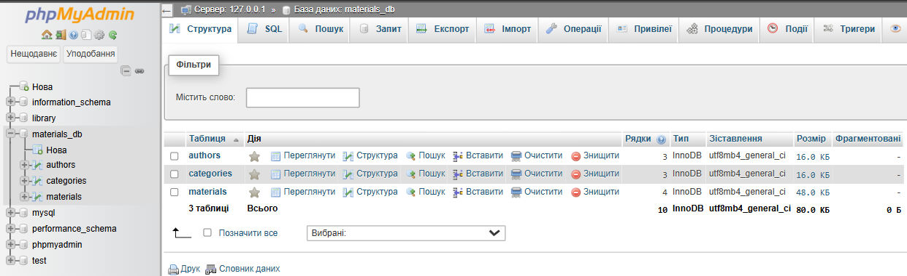
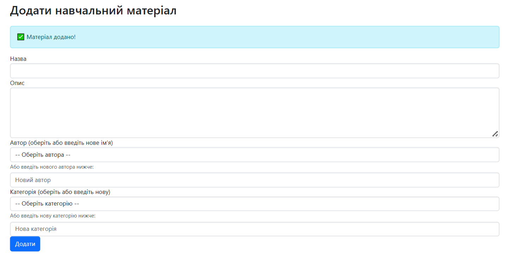
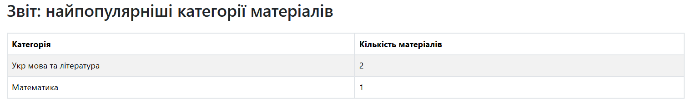

Умова: Створити базу даних MySQL для зберігання матеріалів, авторів та категорій.
База даних створена в phpMyAdmin, назва: materials_db, таблиці: materials, authors, categories.
Умова: Реалізувати інтерфейс для додавання нових матеріалів до бібліотеки.
Умова: Відобразити звіт про найбільш популярні категорії матеріалів.
Дизайн: Всі сторінки оформлені з використанням шаблону AdminLTE.
Створена база даних MySQL:
Інтерфейс додавання матеріалу:
Звіт по категоріях:
